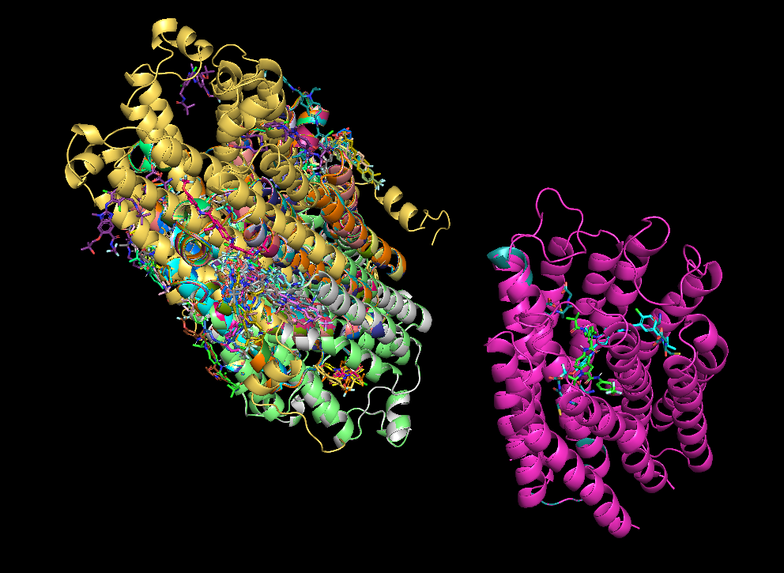

AI Drug Development Public Tools in Syntekabio
JeongSoo Na
Syntekabio
Insilico ~~
ADSP AI Drug Development Operation Team
Update At : 2023.08.18
Protein Structure Prediction
AlphaFold2
AlphaFold is an artificial intelligence (AI) program developed by DeepMind, a subsidiary of Alphabet, which performs predictions of protein structure.
The program is designed as a deep learning system.
Go to GithubESMFold
ESMFold (Evolutionary Scale Modeling) is an artificial intelligence method for predicting protein structures.
Language models generalize beyond natural proteins
Go to GithubSolvent
Solvent is a library that provides protein folding algorithms.
It supports single sequence based protein folding including ESMFold, OmegaFold, and IgFold.
Go to GithubExample
Protein Ligand Molecular Docking
Gnina
Get Protein Ligand Docking Pose & Interaction Affinity Molecular docking with deep learning Protein–Ligand Scoring with Convolutional Neural
Networks (Primary methods citation) Ligand pose optimization with atomic grid-based convolutional neural networks
Go to GithubDiffDock
Predicting the binding structure of a small molecule ligand to a protein
Recent deep learning methods that treat docking as a regression problem have decreased runtime compared to traditional search-based methods but have yet to offer substantial improvements in accuracy.
Go to GithubAutoDock
AutoDock Vina is one of the fastest and most widely used open-source docking engines.
It is a turnkey computational docking program that is based on a simple scoring function and rapid gradient-optimization conformational search.
Go to GithubTarget Protein Docking using Gnina
Project : Protein Ligand Molecular Docking Structure Validation
Partners : KUKJE PHARM
Date : 2023.02 ~
Target : O14684 (Uniprot ID)
Process
Install / Environment setting → Option / Parameter setting → Check Multi Protein Complex Target Docking Possibility → Self Docking → Cross Docking → Target Compound Docking
Setting
Working from within dockers using on-premises servers
Set python script and option parameter
Check Multi Protein Target Docking Possibility
Self Docking
Get all PDB files(Protein Data Bank : Protein Structure)
O14684 in RCSB
PDB data needs reference ligand in binding site
Extract ligand and Docking with existing structure
Check similarity and binding affinity with original structure
9 number of pose each result
The best pose is mostly 1
Output Log : Binding Affinity(kcal/mol) / CNN pose score / CNN
affinity
Cross Docking
Output Log : Binding Affinity(kcal/mol) / CNN pose score / CNN
affinity
Output data will be statistically processed later

Target Compound Docking
Do structures superimposition
Get best pose in output data
Result
Compare with experimental data
Validate similarity with real model
Target Protein Docking using DiffDock
Project : None
Process
Install / Environment setting → Option / Parameter setting → Check Multi Protein Complex Target Docking Possibility → Self Docking → Cross Docking
Issue
The current version has many structures that are difficult to
dock depending on the target.
Checking for updates by mail and continuous contact to
developers and researchers
It's scheduled to be updated in September 2023 with report and
raw source code in Github
Setting
Working from within dockers using on-premises servers
Set python script and option parameter
Check Multi Protein Target Docking Possibility
Self Docking
Cross Docking
Protein Ligand Interaction Profiling
PLIP Public Tool

Protein-Ligand Interaction Profiling
Easy and fast identification of non-covalent interactions
between biological macromolecules and their ligands.
Web Service : PLIP Service
Local Server setting
Set Environment (Docker)
docker pull pharmai/plip
Run PLIP (shell command)
docker run --rm -v ${PWD}:/results -w /r0esults -u $(id -u ${USER}):$(id -g ${USER}) pharmai/plip:latest -f input.pdb -yv -o output_dir_path -x -t -y -p